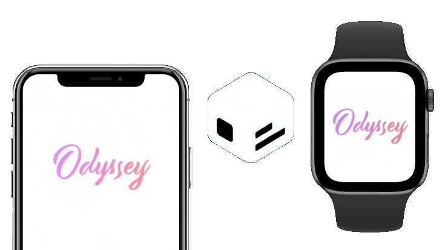

¡El primer Jailbreak para el Apple Watch
de la historia!

El Jailbreak de Odyssey se liberaría en los próximos días
para los usuarios de iOS 13.0 a 13.5
Además, veremos el primer Jailbreak en un Apple Watch, pudiendo modificar las watchfaces del propio sistema
al que viene vinculado el Apple Watch de serie.